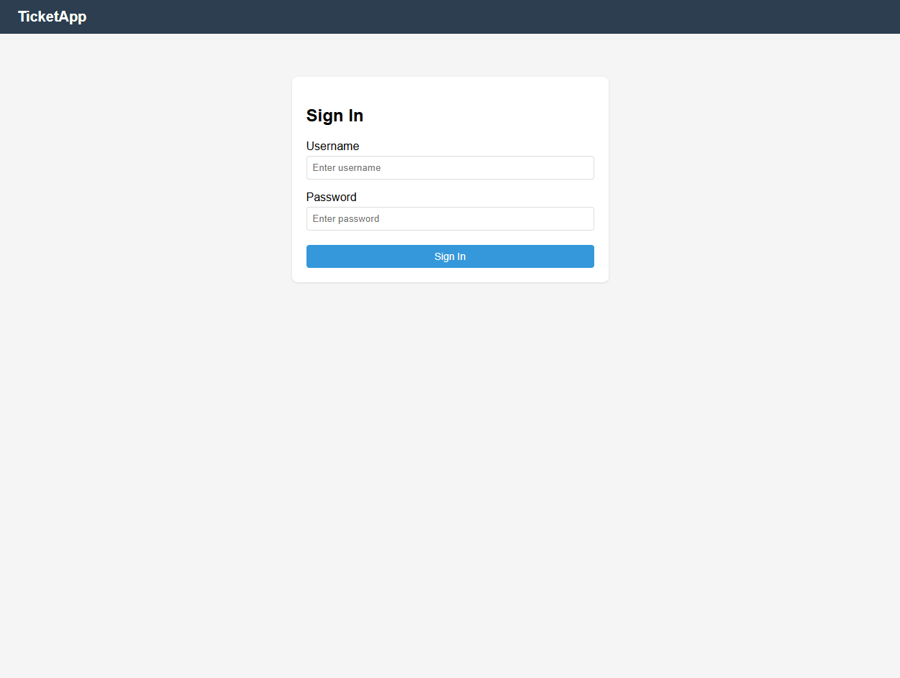
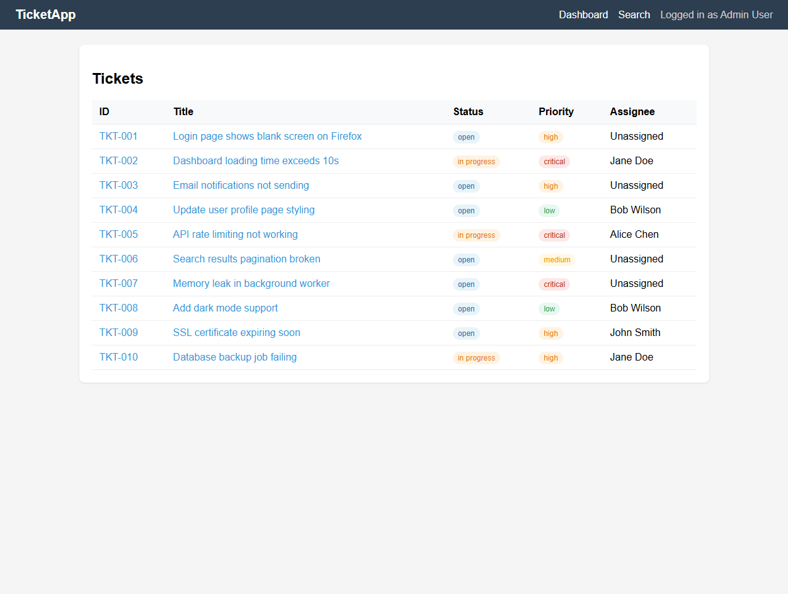
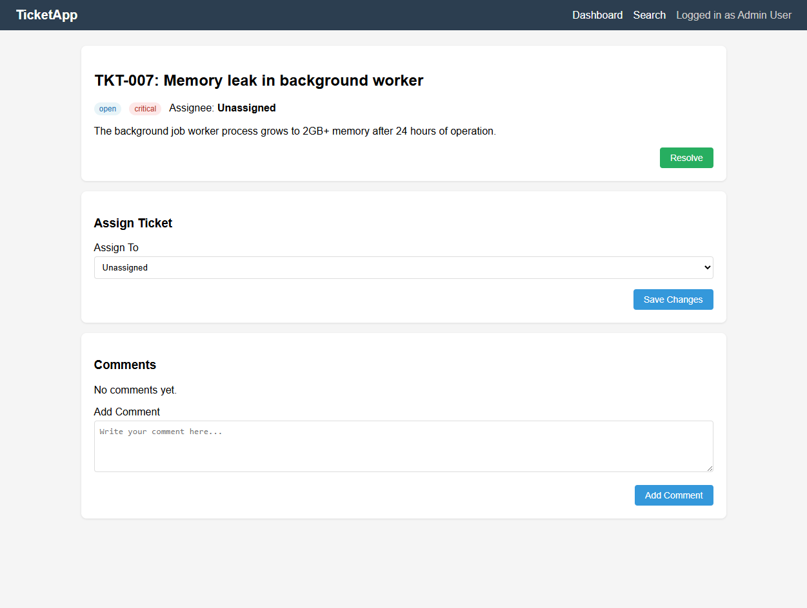
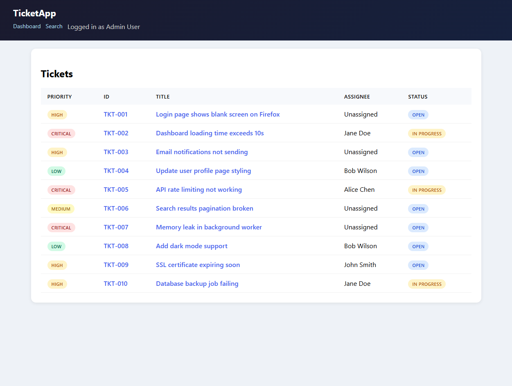
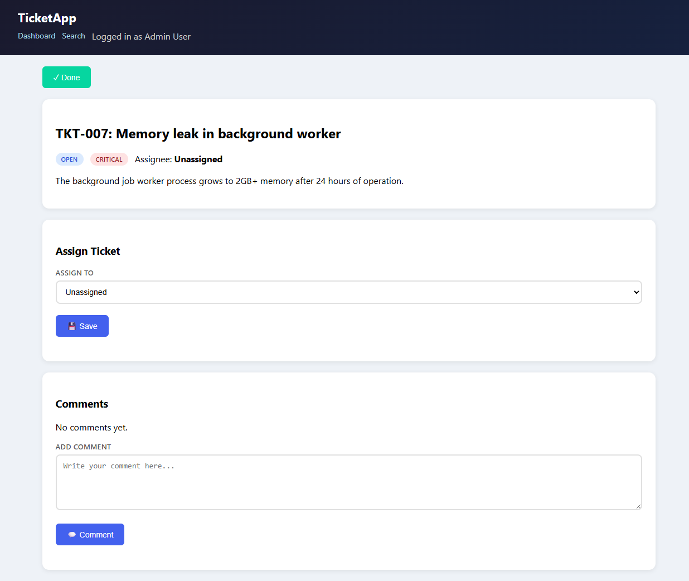

Self-Healing Adaptive Browser Automation
Record a workflow once. Replay it anywhere.
The UI changes. The workflow doesn't break.
Steve Elliott - March 2026
Every enterprise has repetitive browser workflows. ServiceNow tickets, Jira tasks, insurance claims, HR onboarding. Today they're either done manually or automated with fragile scripts.
The gap: Scripted automation = consulting gig (rebuild every time). Self-healing automation = scalable product.
Instead of telling the computer HOW to interact (selectors), tell it WHAT to achieve (goals). The system figures out the HOW at runtime.
page.click('#btn-resolve-main')
page.fill('#comment-textarea', text)
page.click('button.submit-btn')
Selector changes = script dies
goal: "Click the Resolve button"
goal: "Fill the comment field"
goal: "Submit the form"
UI changes = system adapts
Key insight: The workflow describes the GOAL ("click Resolve"), not the SELECTOR ("#btn-resolve"). When the UI changes, the IntentEngine finds the element by understanding the page, not memorizing paths.
From human demonstration to adaptive automated skill in 5 steps:
No coding required. A business analyst demonstrates the task. TierZero generates the automation. If the UI changes, the automation adapts.
A simulated ticket management system (like ServiceNow). This is Layout v1 - the "original" design. We'll record a workflow here.

Note: Standard login form. "Sign In" button. Normal label casing. Light blue button.
10 tickets with ID, Title, Status, Priority, Assignee columns. This is where the workflow recording begins - we'll search for and open a ticket.

Column order: ID → Title → Status → Priority → Assignee. Buttons in nav bar, right-aligned. Status/priority badges inline.
The recorded workflow: open ticket TKT-007, add a comment, assign to someone, click Resolve. All buttons are text-based and right-aligned.

"Resolve" button (green, bottom-right). "Save Changes" (blue, right). "Add Comment" (blue, right). Standard text labels.
The product team ships a redesign. Traditional automation breaks immediately. Let's see what changed:
.btn → .action-btn, .card → .panelWith traditional scripting: Every selector fails. Every text match fails. Script is dead. Engineer spends days rewriting.
With TierZero: Workflow says "Click Resolve button." IntentEngine finds "✓ Done" via aria-label. Zero changes needed.
Same data. Completely different structure. Priority column is FIRST. Headers are UPPERCASE. Status pills on the RIGHT. Nav moved below logo.

Column order changed: Priority → ID → Title → Assignee → Status. Every CSS selector is different. A scripted automation would fail on every single element.
Workflow was recorded on v1 (left). Replayed on v2 (right). Zero modifications to the workflow.

Every difference handled: "Resolve" → "✓ Done" (found via aria-label). Button moved from bottom-right to top (found via role). New modal dismissed automatically. Comment field found despite label change.
Five resolution strategies tried in order. If one fails, the next kicks in:
Recovery strategies:
Scripted automation = consulting gig (rebuild for every client, every update)
Self-healing adaptive automation = scalable product
lines of code
tests passing
new modules
Autopilot, not copilot. Sell outcomes, not tools.
$50-400B TAM per vertical in services automation.